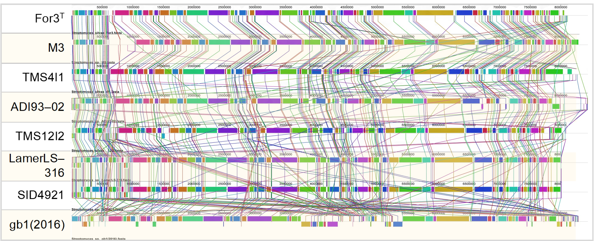
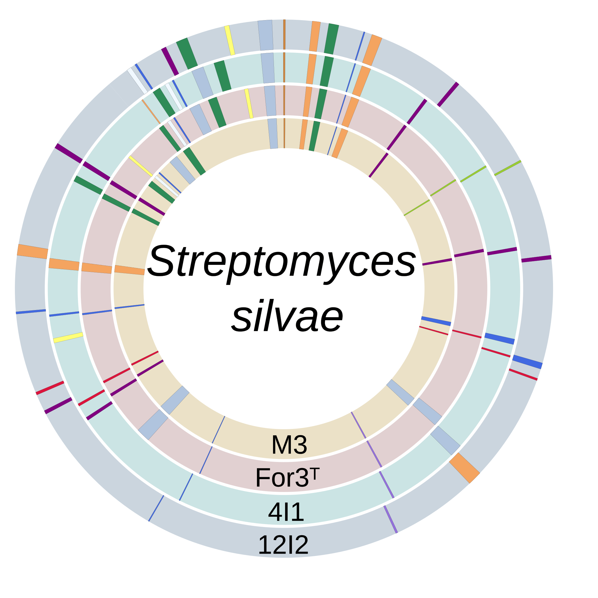
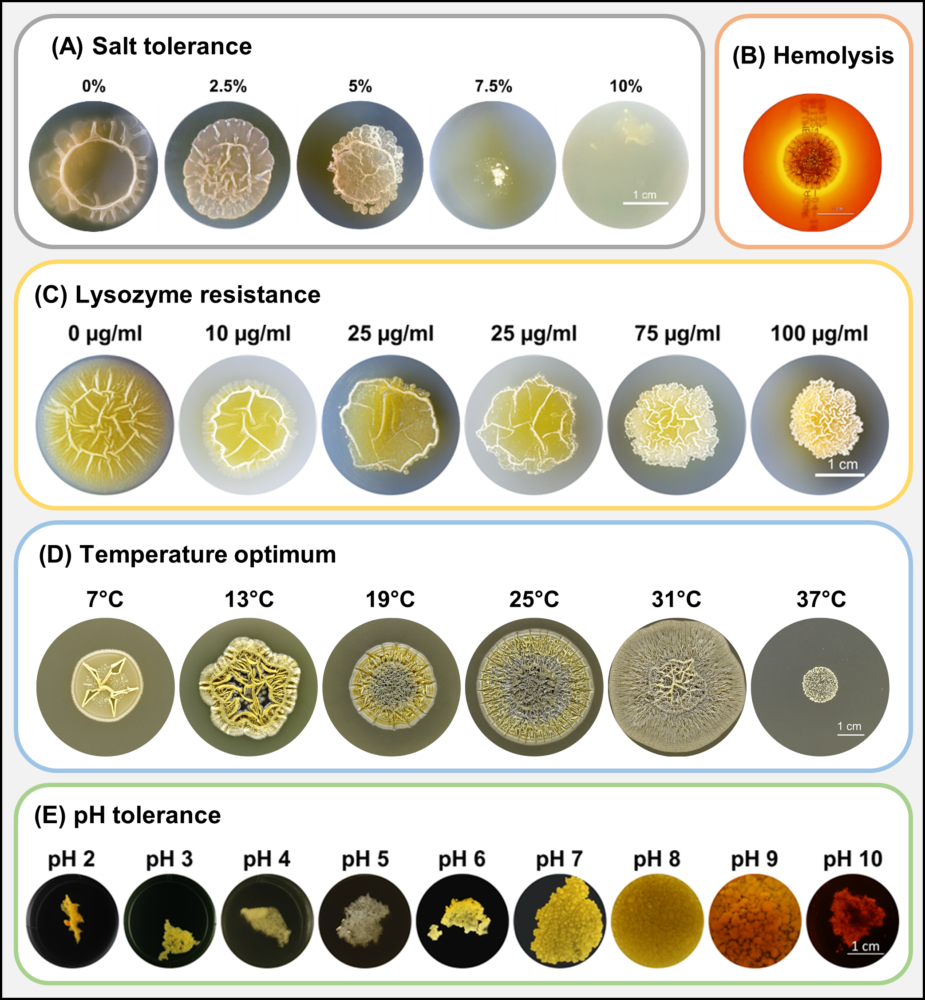

A genome-based study showing that the S. silvae clade is taxonomically coherent, yet structurally and biosynthetically diversified.
Key findings Explore analysesDr. Daniela Hartmann • Technische Universität Dresden
This website presents my doctoral research at the interface of laboratory microbiology and comparative genomics.
The project shows how closely related S. silvae strains remain taxonomically consistent while differing in genome structure, biosynthetic potential, and phenotype.
Streptomyces are Gram-positive, filamentous soil bacteria belonging to the phylum Actinobacteria. They are known for their complex life cycle, mycelium-like growth, and unusually large genomes with extensive biosynthetic potential.
These bacteria are highly relevant because they are among the most important natural producers of bioactive secondary metabolites, including antibiotics, antifungals, anticancer compounds, and other pharmaceutically valuable molecules.
This makes Streptomyces especially important for comparative genomics: differences in genome structure and biosynthetic gene clusters can reveal how closely related strains diversify, adapt to ecological niches, and differ in their potential to produce medically and biotechnologically relevant compounds.
References: van Bergeijk et al. (2020) FEMS Microbiology Reviews; Chater (2016) F1000Research.
Pairwise ANI values range from 96.65 % to 100 %, remaining clearly above the 95 % species threshold.
Whole-genome alignments show broadly conserved synteny, but also local rearrangements and inversions that distinguish individual strains.
Core BGCs are shared across strains, whereas accessory clusters vary and point to strain-level diversification in secondary metabolism.
Broad tolerance across 7–37 °C, pH 2–10, and up to 10 % NaCl complements the observed genomic plasticity.

Genome-level comparison revealed high relatedness beyond the species threshold, but also clear strain-level structural variation.
Phylogenomic reconstruction placed the analyzed strains within a coherent clade and supported their taxonomic interpretation.

Genome maps and BGC profiles showed conserved core organization alongside local differences in chromosome structure and biosynthetic content.

Laboratory phenotyping linked genomic variation to observable differences in morphology and stress-related traits.
Diese Seite präsentiert meine Promotionsforschung zur vergleichenden Genomanalyse von S. silvae. Die Ergebnisse zeigen, dass die untersuchten Stämme trotz taxonomischer Kohärenz Unterschiede in Genomstruktur, biosynthetischem Potenzial und Phänotyp aufweisen.
Interested in comparative genomics, microbial phylogenomics, genome visualization, or strain-level analysis of actinomycetes? I welcome scientific exchange, collaboration, and research-related inquiries.
Dr. Daniela Hartmann
Technische Universität Dresden
daniela.hartmann@tu-dresden.de